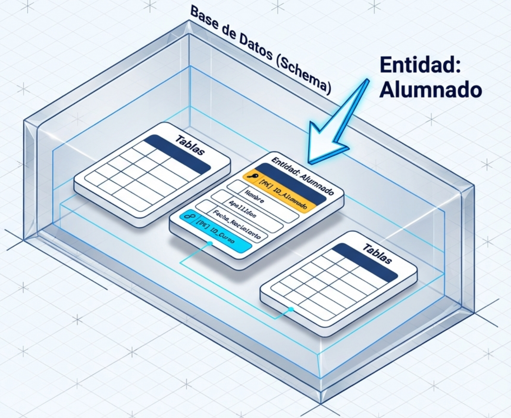
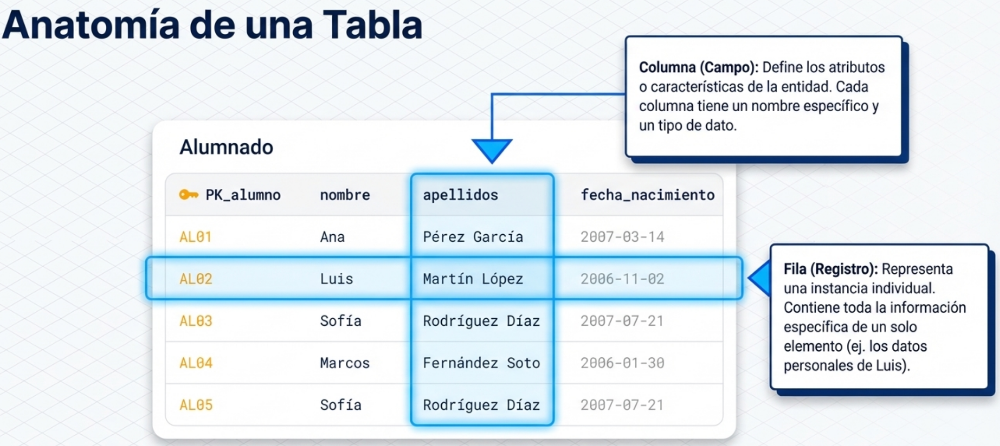
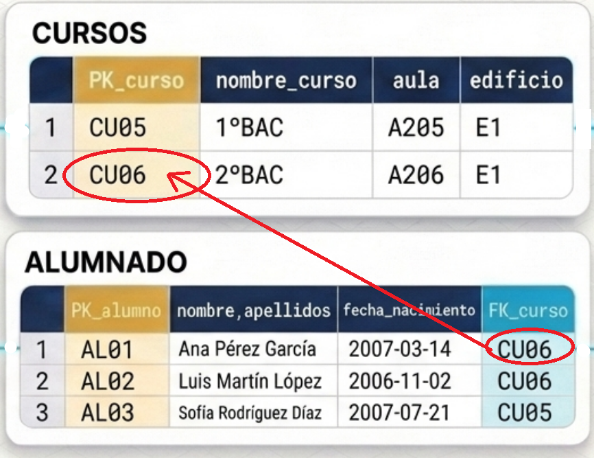
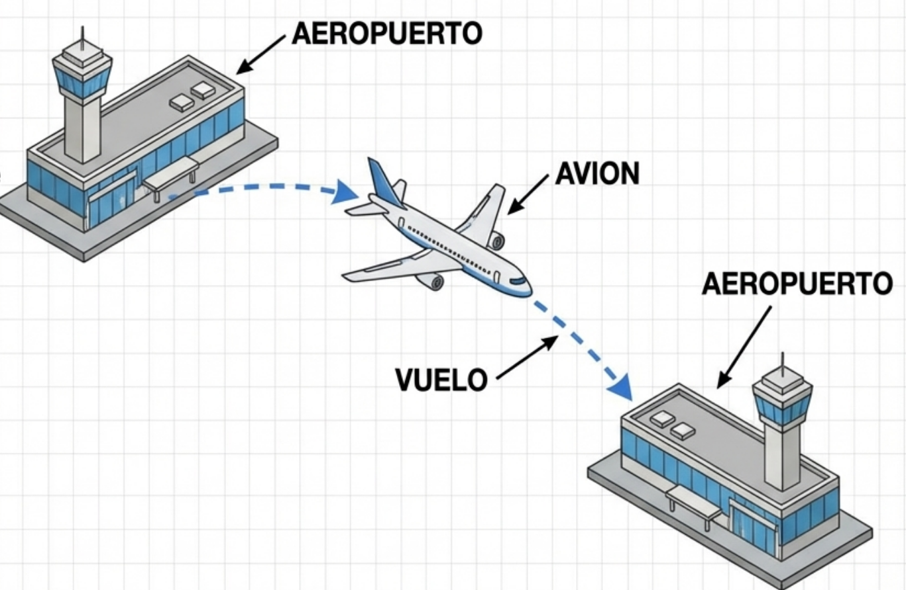

Conceptos básicos de estructuras de bases de datos¶
Las bases de datos relacionales están organizadas de manera jerárquica y estructurada para facilitar el almacenamiento, la consulta y la gestión de grandes volúmenes de información.

Base de Datos (o schema)¶

Es la estructura principal que contiene toda la información organizada. Una base de datos o schema puede almacenar múltiples tablas que están relacionadas entre sí.
Símil: Es como una carpeta de Windows que contiene archivos.
- Ejemplo: una base de datos de un instituto puede contener tablas para alumnos, profesores, asignaturas y cursos.
graph TD
BD[("INSTITUTO")]
TB1["Alumnado"]
TB2["Profesorado"]
TB3["Asignaturas"]
TB4["Cursos"]
BD --> TB1
BD --> TB2
BD --> TB3
BD --> TB4
style BD fill:#e1f5fe,stroke:#01579b,stroke-width:2px
style TB1 fill:#f3e5f5,stroke:#4a148c
style TB2 fill:#e8f5e8,stroke:#1b5e20
style TB3 fill:#fff3e0,stroke:#e65100
style TB4 fill:#ffebee,stroke:#c62828Tabla¶
Guarda características de una entidad específica dentro de la base de datos. Está compuesta por filas y columnas que estructuran la información de manera ordenada. Cada tabla debe tener un nombre único y almacenar datos relacionados con un tema concreto.
¿Qué es una entidad específica?
Entidad
Una entidad es cualquier cosa del mundo real sobre la que queremos guardar información. Cada entidad tiene características específicas que la describen y la diferencian de otra. Ejemplos de entidades:
- 🧑 ALUMNADO: Estudiantes del instituto. Características: nombre, apellidos, fecha de nacimiento
- 📚 CURSOS: Un grupo de estudiantes. Características: nombre del curso, aula, ubicación
- 👨🏫 PROFESORES: Un grupo de docentes. Características: nombre, especialidad, despacho
- 📖 ASIGNATURAS: Una serie de materias. Características: nombre, horas semanales, código
Ejemplo: Tomemos de ejemplo la tabla "Alumnado" que contiene información sobre (la entidad) estudiantes del centro.
| PK_alumno | nombre | apellidos | fecha_nacimiento |
|---|---|---|---|
| AL01 | Ana | Pérez García | 2007-03-14 |
| AL02 | Luis | Martín López | 2006-11-02 |
| AL03 | Sofía | Rodríguez Díaz | 2007-07-21 |
| AL04 | Marcos | Fernández Soto | 2006-01-30 |
| AL05 | Sofía | Rodríguez Díaz | 2007-07-21 |
La forma de representar esta tabla es: (por ahora fíjate en la columna del medio, las otras las veremos más adelante)
erDiagram
ALUMNADO {
string PK_alumno PK
string nombre
string apellidos
date fecha_nacimiento
}Columna (Campo)¶
Define los atributos o características que describen cada entidad. Cada columna tiene un nombre específico (sin espacios) y almacena un tipo particular de información.
-
Ejemplo: En la tabla "Alumnado", las columnas son: PK_alumno, nombre, apellidos, fecha_nacimiento...
| PK_alumno| nombre | apellidos | fecha_nacimiento |
Fila (Registro)¶
Cada fila representa una instancia individual de la entidad almacenada en la tabla. Contiene toda la información específica de un elemento particular.
-
Ejemplo: En la tabla "Alumnado", cada fila correspondería a los datos personales de un estudiante. Estos son los datos de Luis:
| AL02 | Luis | Martín López | 2006-11-02 |

Claves¶
Las claves son columnas (atributos) o conjuntos de columnas que permiten identificar de forma única cada registro en una tabla. Son fundamentales para mantener la integridad y consistencia de los datos.
Convierten a los distintos registros/filas en únicos.
Clave Primaria (Primary key o PK)¶
Note
Es un campo (o conjunto de campos) que identifica de forma única cada fila de una tabla.
No puede repetirse ni estar vacío, garantizando que cada registro sea distinguible del resto.
- Ejemplo: El campo "PK_alumno" en la tabla "Alumnado" que contiene un código único para cada estudiante.
| PK_alumno | nombre | apellidos | fecha_nacimiento |
|---|---|---|---|
| AL01 | Ana | Pérez García | 2007-03-14 |
| AL02 | Luis | Martín López | 2006-11-02 |
| AL03 | Sofía | Rodríguez Díaz | 2007-07-21 |
| AL04 | Marcos | Fernández Soto | 2006-01-30 |
| AL05 | Sofía | Rodríguez Díaz | 2007-07-21 |
❌ Como puedes observar en la tabla, existen dos alumnas que se llaman Sofía, se apellidan igual y han nacido el mismo día. Pero son dos alumnas distintas.
✅ AL03 y AL05 identifican de forma única a Sofía. A partir de ahora serán las alummnas con nombres de robot, AL03 y AL05.
Clave Foránea (Foreign key o FK)¶
⚠️ El Problema: ¿Dónde guardamos el Curso?¶
Hasta ahora, tenemos los datos básicos del alumnado. Pero la información está incompleta: ¿En qué curso está cada alumno?
Tenemos dos opciones:
Opción 1️⃣: Meter el curso directamente en la tabla ALUMNADO ❌Error¶
Añadimos una columna curso a la tabla:
| PK_alumno | nombre | apellidos | fecha_nacimiento | curso | aula | ubicacion |
|---|---|---|---|---|---|---|
| AL01 | Ana | Pérez García | 2007-03-14 | 2ºBach | A206 | Edificio C |
| AL02 | Luis | Martín López | 2006-11-02 | 2ºBach | A206 | Edificio C |
| AL03 | Sofía | Rodríguez Díaz | 2007-07-21 | 1ºBach | A106 | Edificio C |
| AL04 | Marcos | Fernández Soto | 2006-01-30 | 2ºBach | A206 | Edificio C |
| AL05 | Sofía | Rodríguez Díaz | 2007-07-21 | 1ºBach | A105 | Edificio C |
¿Ventajas?
- ✅ Simple y rápido
- ✅ Toda la información en una tabla
¿Problemas?
- ❌ Si escribimos mal "2ºBach" en una fila y "2º Bach" en otra, tenemos inconsistencia
- ❌ ¿Qué pasa si queremos saber más datos del curso (aula, ubicación, horario)?
- ❌ No podemos registrar un curso nuevo si no tiene alumnos
- ❌ Si eliminas todos los alumnos de un curso, pierdes la información del curso
Opción 2️⃣: Crear una tabla CURSOS separada y relacionarla ✅Acierto¶
En lugar de guardar el nombre del curso, guardamos un identificador único del curso:
Tabla: CURSOS
| PK_curso | nombre_curso | aula | ubicacion |
|---|---|---|---|
| CU01 | 1ºESO | A105 | Edificio A |
| CU02 | 2ºESO | A107 | Edificio A |
| CU03 | 3ºESO | A106 | Edificio B |
| CU04 | 4ºESO | A104 | Edificio B |
| CU05 | 1ºBAC | A205 | Edificio C |
| CU06 | 2ºBAC | A206 | Edificio C |
Tabla: ALUMNADO (con clave foránea)
| PK_alumno | nombre | apellidos | fecha_nacimiento | FK_curso |
|---|---|---|---|---|
| AL01 | Ana | Pérez García | 2007-03-14 | CU06 |
| AL02 | Luis | Martín López | 2006-11-02 | CU06 |
| AL03 | Sofía | Rodríguez Díaz | 2007-07-21 | CU05 |
| AL04 | Marcos | Fernández Soto | 2006-01-30 | CU06 |
| AL05 | Sofía | Rodríguez Díaz | 2007-07-21 | CU05 |
¿Ventajas?
- ✅ Datos consistentes (no hay duplicados del curso)
- ✅ Datos centralizados (cambios en el curso se reflejan automáticamente)
- ✅ Podemos guardar cursos sin alumnos aún
- ✅ Mejor organización de la información
¿Desventajas?
- ⚠️ Necesitamos dos tablas en lugar de una.
- ⚠️ Consultas un poco más complejas (necesitamos relacionar tablas).
✅ La Solución: la Opción 2 (Claves Foráneas)¶
La Opción 2 es mucho mejor. Para ello usamos la Clave Foránea (FK).
Clave Foránea (Foreign Key o FK)¶

Clave_foránea
Campo que establece una relación entre dos tablas diferentes. Su valor debe coincidir con una clave primaria de otra tabla, creando vínculos entre las entidades.
Una clave foránea es un enlace a la clave primaria de otra tabla.
En este ejemplo, el campo "FK_curso" en la tabla "ALUMNADO" es el campo FK, que hace referencia al campo PK "PK_curso" de la tabla "CURSOS".
🔗 Diagrama de relación. Relaciones entre tablas¶
Observa las flechas que conectan las tablas:
erDiagram
CURSOS ||--o{ ALUMNADO : "tiene"
CURSOS {
string PK_curso PK
string nombre_curso
string aula
string ubicacion
}
ALUMNADO {
string PK_alumno PK
string nombre
string apellidos
date fecha_nacimiento
string FK_curso FK
}Explicación:
- 1 curso → Muchos alumnos (||--o{)
- Un curso puede tener múltiples alumnos
- Pero cada alumno pertenece a un único curso
La relación se llama 1:N (uno a muchos)
💡 ¿Por qué esto es mejor?¶
Preguntas frecuentes:¶
¿En qué curso está Sofía?
Busco a Sofía (AL03) en ALUMNADO → FK_curso = CU05
Busco CU05 en CURSOS → 1ºBAC
¿Cuál es el aula del curso de Marcos?
Busco a Marcos (AL04) en ALUMNADO → FK_curso = CU06
Busco CU06 en CURSOS → aula = A205
¿Qué pasa si cambio el aula de 2ºBAC de A205 a A300?
Solo modifico una fila en la tabla CURSOS. Automáticamente, todos los alumnos de CU06 verán el cambio.
Con la Opción 1 (curso directamente en ALUMNADO), tendría que cambiar 3 filas (Ana, Luis y Marcos).
🔒 Integridad Referencial¶
La base de datos garantiza automáticamente que:
✅ Todo FK_curso en ALUMNADO apunta a un PK_curso que existe en CURSOS
❌ No puedo insertar un alumno con FK_curso = "CU999" si CU999 no existe
❌ ERROR: No se puede insertar
INSERT INTO ALUMNADO (PK_alumno, nombre, apellidos, fecha_nacimiento, FK_curso)
VALUES ('AL05', 'Juan', 'García López', '2007-05-10', 'CU999');
-- CU999 no existe en CURSOS, por lo que la BD rechaza la inserción
✅ CORRECTO: El curso debe existir
✅ OK: Se inserta correctamente
INSERT INTO ALUMNADO (PK_alumno, nombre, apellidos, fecha_nacimiento, FK_curso)
VALUES ('AL05', 'Juan', 'García López', '2007-05-10', 'CU06');
-- CU06 existe en CURSOS, la inserción es válida
🛫 Otro Ejemplo más complejo: Vuelos aéreos¶

erDiagram
AEROPUERTO ||--o{ VUELO : "vuelos_salida"
AEROPUERTO ||--o{ VUELO : "vuelos_llegada"
AVION ||--o{ VUELO : "opera"
AEROPUERTO {
string codigo_iata PK
string nombre
string ciudad
string pais
string altura
}
AVION {
string matricula PK
string modelo
string marca
int capacidad
}
VUELO {
string numero_vuelo PK
string matricula_avion FK
string aeropuerto_salida FK
string aeropuerto_llegada FK
datetime fecha_hora_salida
datetime fecha_hora_llegada
string estado
}🔗 Explicación de las Relaciones
1. AEROPUERTO → VUELO (vuelos_salida) - Significado: Un aeropuerto puede ser el origen de muchos vuelos - Ejemplo: MAD (Madrid) puede tener vuelos de salida a BCN, AGP, LIS, etc.
2. AEROPUERTO → VUELO (vuelos_llegada) - Significado: Un aeropuerto puede ser el destino de muchos vuelos - Ejemplo: BCN (Barcelona) puede recibir vuelos desde MAD, AGP, VLC, etc.
3. AVION → VUELO (opera) - Significado: Un avión puede realizar muchos vuelos a lo largo del tiempo - Ejemplo: El avión EC-ABC puede operar el vuelo IB1234 hoy y el IB5678 mañana
📋 Resumen de relaciones
| Tabla | Relación | Tabla | Significado |
|---|---|---|---|
| AEROPUERTO | 1:N | VUELO | 1 aeropuerto → Varios vuelos de salida |
| AEROPUERTO | 1:N | VUELO | 1 aeropuerto → Varios vuelos de llegada |
| AVION | 1:N | VUELO | 1 avión → Varios vuelos operados |
💡 Conceptos Clave¶
| Concepto | Definición |
|---|---|
| Clave Primaria (PK) | Identificador único que distingue cada fila en una tabla. No puede ser NULL ni repetido. |
| Clave Foránea (FK) | Campo que referencia la PK de otra tabla. Establece relaciones entre tablas y garantiza integridad referencial. |
| Relación 1:N | Un registro en la tabla principal se relaciona con múltiples registros en la tabla dependiente. |
| Integridad Referencial | Garantía de que toda FK apunta a un PK existente. |
| Normalización | Proceso de reorganizar datos para eliminar redundancias y anomalías. |